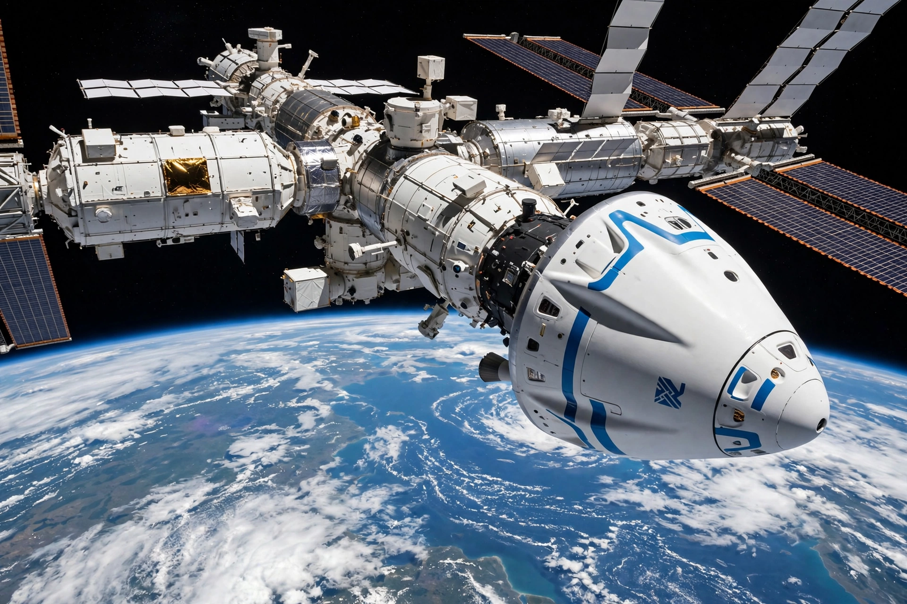

Boeing Starliner
From Wikipedia, the free encyclopedia
| Boeing Starliner | |
|---|---|
| Manufacturer | Boeing |
| Operator | Boeing / NASA |
| Crew | Up to 7 |
| Launch vehicle | Atlas V |
| First flight | 20 December 2019 (uncrewed) |

Starliner at the ISS.The Boeing CST-100 Starliner is a partially reusable crewed spacecraft developed by Boeing under NASA's Commercial Crew Program, intended — alongside SpaceX's Crew Dragon — to ferry astronauts to the International Space Station. It is a classic capsule design, larger than Apollo's, designed to land on solid ground in the American desert using parachutes and airbags, and to be reused up to ten times.
Starliner's development was troubled. Its first uncrewed test flight in December 2019 failed to reach the ISS after a mission-clock error; a second uncrewed flight succeeded in May 2022 after valve corrosion delays. The crewed flight test in June 2024 carried Butch Wilmore and Suni Williams to the station, but helium leaks and thruster failures in its service module led NASA to judge the capsule too risky for their return: Starliner came home empty that September, and the astronauts returned months later aboard a Crew Dragon.
Status
Boeing absorbed over a billion dollars in losses on the fixed-price contract, and NASA certified a path of further uncrewed testing before operational crewed rotations. Starliner's saga — set against Dragon's routine service — became the defining contrast of the commercial crew era: two capsules, two corporate cultures, two very different outcomes.
See also
Crew Dragon · International Space Station · Atlas V · SpaceX